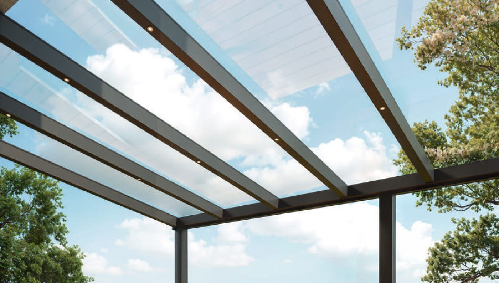
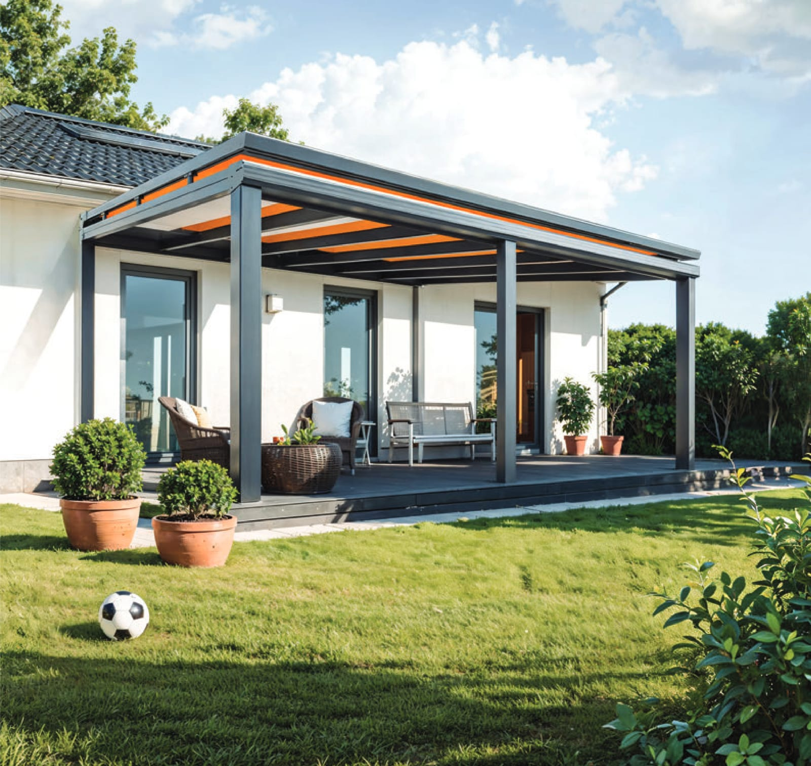
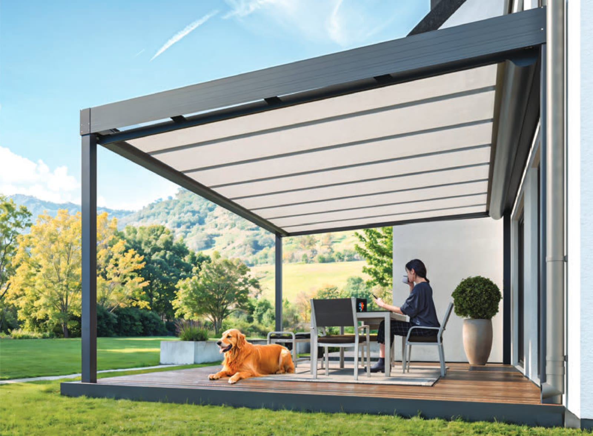
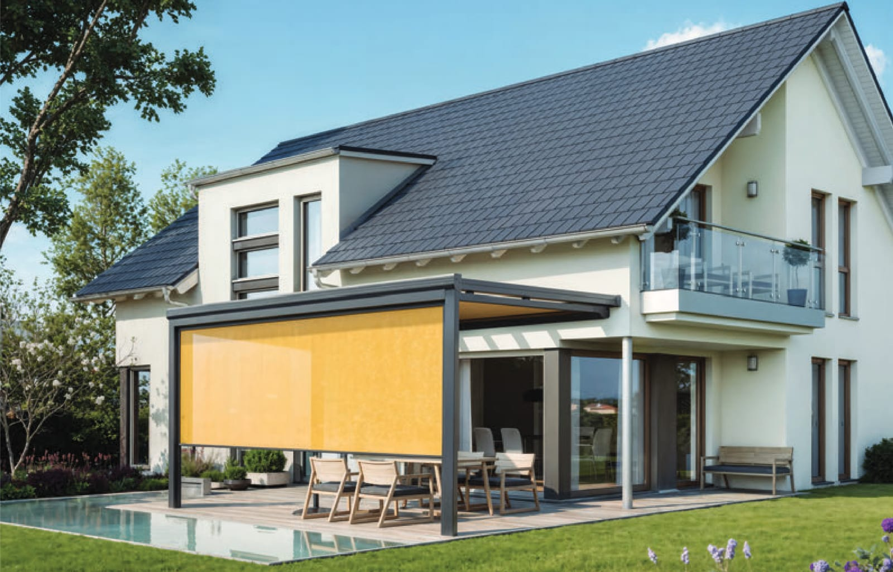

Nach Ihren Maßen gefertigt, mit allem im Paket: Profile, Glas, jede Schraube, die passenden Bohrer und sogar die Handschuhe für die Glasmontage. Dazu eine ausführliche Montageanleitung. Sie brauchen nur Ihr eigenes Werkzeug.
Kein Baumarkt-Marathon, kein Rätseln, welcher Dübel passt. Jedes Teil ist auf Ihr Dach abgestimmt und beschriftet.
Nur übliches Heimwerker-Werkzeug. Die passenden Bohrer und Bits liefern wir mit – genau für die Schrauben im Paket.
Die Montage schaffen zwei geübte Heimwerker meist an einem Wochenende. Für das Auflegen der Glasplatten planen Sie bitte mindestens zwei, besser drei Personen ein – die Scheiben sind groß und schwer.
Vor der Bestellung schicken wir Ihnen auf Wunsch die vollständige Werkzeugliste, damit am Montagetag nichts fehlt.
Dach konfigurierenZu jedem Bausatz erhalten Sie die ausführliche Montageanleitung mit Zeichnungen zu jedem Arbeitsschritt – in dieser Reihenfolge bauen Sie Ihr Dach auf:
Die Anleitung liegt Ihrem Bausatz bei. Und wenn es doch einmal hakt: Rufen Sie uns an – unsere Monteure helfen direkt weiter.

Breite und Tiefe auf den Zentimeter, Glas klar, matt oder Polycarbonat, Farbe, Wandmontage oder freistehend – und auf Wunsch Markisen. Sie sehen Ihr Dach sofort in 3D und den Preis für den kompletten Bausatz.
Alle Markisen wählen Sie im 3D-Konfigurator gleich mit aus – passend zu Ihrem Dach, mit Funkmotor und Handsender.

Liegt auf dem Glasdach und hält die Hitze ab, bevor sie durchs Glas kommt.

Unter dem Glas, geschützt vor Wind und Wetter – angenehmer Schatten auf der Terrasse.

Vorne oder seitlich: Sicht-, Wind- und Sonnenschutz, der in der Seitenführung läuft.
Wohnen Sie im Umkreis von km um Waldshut-Tiengen, können Sie die Montage im Warenkorb einfach dazubuchen – durch dieselben Monteure, die diese Dächer jede Woche bauen.
Maße, Eindeckung, Farbe und Markisen im 3D-Konfigurator wählen. Der Preis steht sofort fest.
Online bestellen und bequem bezahlen. Wir prüfen Ihre Maße und melden uns bei Fragen persönlich.
Ihr Dach wird nach Maß gefertigt und per Spedition geliefert – komplett mit Zubehör-Paket.
Mit Montageanleitung und Telefon-Support selbst aufbauen – oder im Umkreis von km von uns montieren lassen.
Alle Aluminium-Profile nach Maß (Wandprofil, Rinne, Sparren, Pfosten), die gewählte Eindeckung passend zugeschnitten, Dichtungen und Abdeckkappen, das komplette Schrauben- und Dübelset, die passenden Bohrer und Bits, Dichtmaterial für den Wandanschluss, Schnittschutz-Handschuhe für die Glasmontage und die ausführliche Montageanleitung. Nicht enthalten sind Beton für die Fundamente und Ihr eigenes Werkzeug.
Akku-Bohrschrauber, Bohrhammer, Wasserwaage, Maßband, Richtschnur, Kartuschenpresse, Gummihammer, Steckschlüssel-Satz und zwei stabile Leitern. Die vollständige Liste finden Sie oben unter „Das brauchen Sie selbst“.
Mit handwerklichem Geschick, der Montageanleitung und einer zweiten Person ist ein Terrassendach meist an einem Wochenende aufgebaut. Für das Glas planen Sie bitte mindestens zwei, besser drei Personen ein.
Per PayPal, Klarna, Kreditkarte oder Vorkasse per Überweisung. Die Fertigung startet nach Zahlungseingang.
Ab Warenwert liefern wir kostenlos. Darunter kostet die Lieferung per Spedition bis an Ihr Grundstück pauschal inkl. MwSt. pro Bestellung, deutschlandweit (Festland).
Ja, wenn Sie im Umkreis von km um Waldshut-Tiengen wohnen. Die Prüfung erfolgt im Warenkorb über Ihre Postleitzahl, der Preis wird sofort angezeigt.
Ihr Dach wird individuell nach Ihren Maßen gefertigt – hierfür besteht kein Widerrufsrecht (§ 312g Abs. 2 Nr. 1 BGB). Prüfen Sie Ihre Maße deshalb sorgfältig; bei Fragen helfen wir gern am Telefon.
Das regelt jedes Bundesland unterschiedlich. Viele Terrassenüberdachungen sind bis zu einer bestimmten Größe genehmigungsfrei – erkundigen Sie sich bitte vor der Bestellung bei Ihrem Bauamt.
10 Jahre auf die Beschichtung der Aluminium-Profile, 2 Jahre auf Markisen und 5 Jahre auf Elektrobauteile – zusätzlich zur gesetzlichen Gewährleistung. Voraussetzung ist eine Montage nach Anleitung.